🔖原文信息（编者中文重排）
📚 文献信息
▪ Neumann DA, Camargo PR. Kinesiologic considerations for targeting activation of scapulothoracic muscles – part 1: serratus anterior. Braz J Phys Ther. 2019;23(6):459-466. doi:10.1016/j.bjpt.2019.01.008
▪ 第一作者 Donald Neumann 是《肌肉骨骼系统运动学》的作者，文中插图多来自这本教科书
▪ 文章类型：大师课（叙述性综述），与第 2 部分（斜方肌）配套
前锯肌是肩复合体里最重要、临床上最相关的肌肉之一。它的控制、力量或激活不足，被认为与肩峰下撞击、盂肱关节运动异常、肩胛运动障碍等多种疼痛问题有关。想针对性地练好它，先要搞清楚它的解剖、功能和“坏了会怎样”。
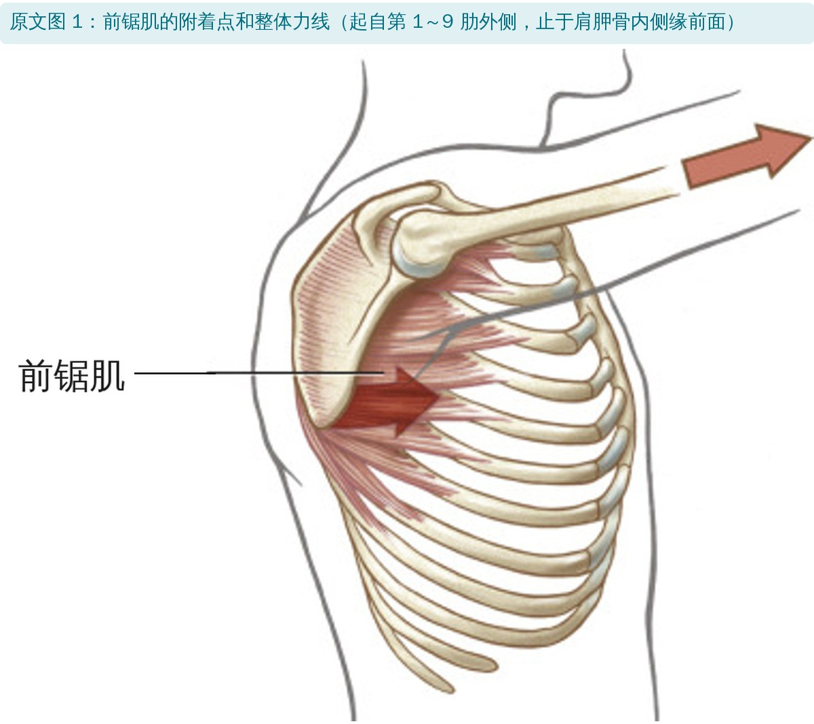
🔖原文图 1：前锯肌
• 起止：起自第 1～9 肋外侧（呈锯齿状，因此得名），绕到肩胛骨前方，止于肩胛骨内侧缘前面；与肩胛下肌、腹外斜肌的附着有交织
• 神经：胸长神经（C5～C7），沿肌肉外表面长距离下行，容易因外伤或过度牵拉受损，也可能因神经炎或原因不明而麻痹
• 主要动作：肩胛前伸和上回旋。力线近乎水平，相对胸锁关节力臂长，所以前伸很有力
• “反向作用”：俯卧撑最后阶段，肩胛固定，前锯肌把胸廓和躯干“推离”地面；这需要斜方肌、菱形肌、肩胛提肌、胸小肌先稳住肩胛。理解这一点是设计高强度前锯肌训练的关键
• 与下斜方肌一起，能把上肢向斜前下方“伸长”，对转移（轮椅 ↔ 床）很重要，因此中段颈髓损伤者尤其要练这两块肌肉
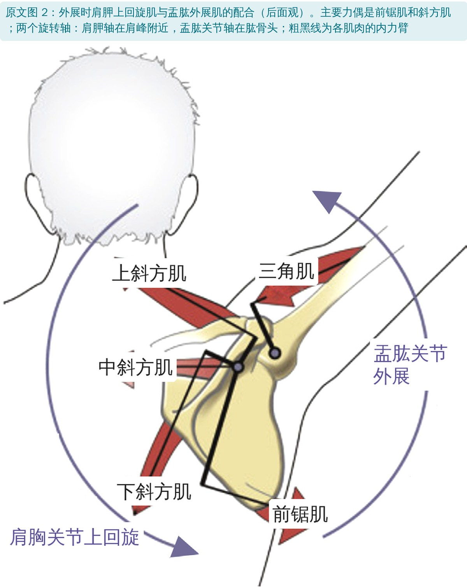
🔖原文图 2：上回旋力偶
• 肩外展和前屈时，前锯肌与斜方肌组成主要力偶让肩胛上回旋；前锯肌力臂好、多束纤维汇聚于下角，所以起主导作用
• 中斜方肌上回旋力臂小，但能抵消前锯肌强大的前伸力；中斜方肌不足时，肩胛上回旋时会过度前伸
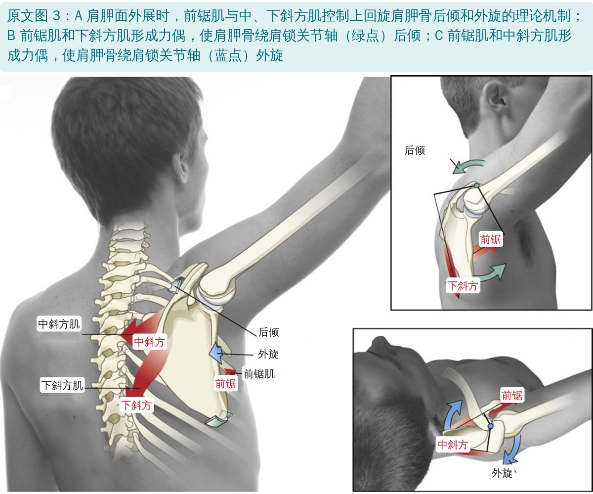
🔖原文图 3：后倾和外旋的力偶
除了上回旋和前伸，前锯肌还参与肩胛的后倾和外旋：与下斜方肌组成力偶完成后倾，与中斜方肌组成力偶完成外旋（以肩锁关节为轴）。上回旋加后倾（以及少量外旋）可能增大或至少维持肩峰下间隙，这正是临床重视它的原因。
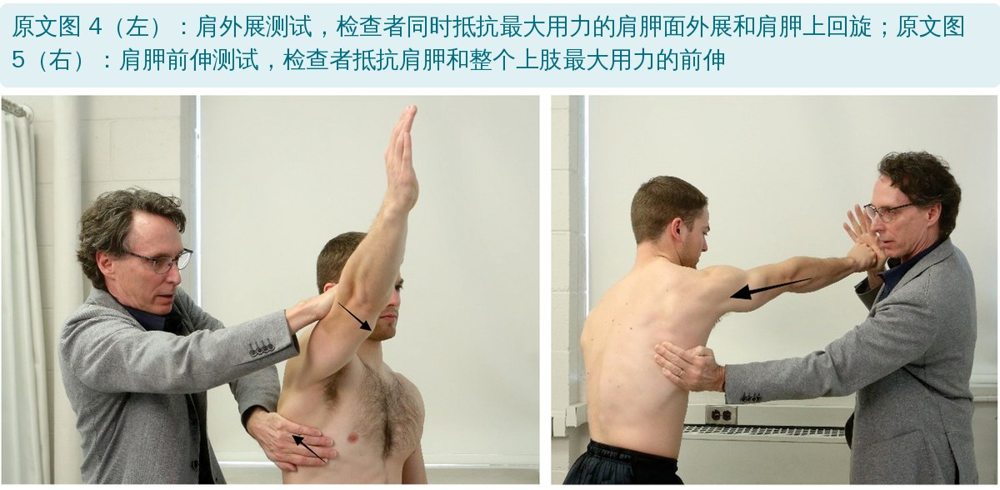
🔖原文图 4、5：前锯肌徒手肌力测试
• 肩外展测试：肩胛面外展约 120°～130°，检查者同时抵抗外展和肩胛上回旋；前锯肌弱时，肩胛撑不住，手臂会过早“塌”向内收
• 肩胛前伸测试：仰卧或坐位，肩前屈 90°～100°、伸肘，抵抗整个上肢前伸；前锯肌弱时，肩胛被推向后缩和内旋，内侧缘翘离胸廓——“翼状肩胛”
• 翼状程度大致与无力程度成正比；两种方法都源自 Kendall 对脊髓灰质炎患者的经验
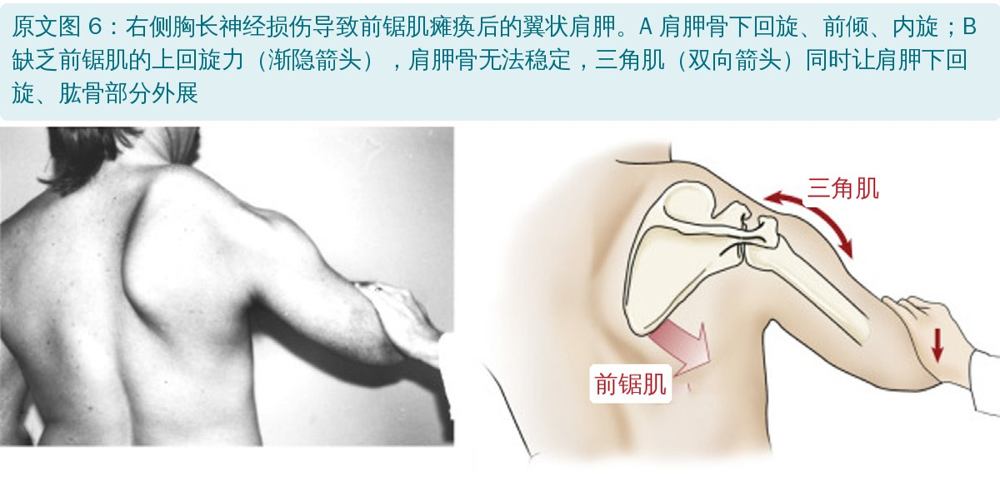
🔖原文图 6：前锯肌瘫痪后的翼状肩胛
• 外展时，前锯肌和上、下斜方肌产生的上回旋力矩必须大于三角肌和冈上肌的下回旋力矩
• 前锯肌无力时，三角肌的拉力没人对抗，肩胛反而下回旋，同时前倾、内旋
• 长期翼状姿势会让胸小肌适应性短缩，进一步加重前倾和内旋；还可能伴随颈胸椎力线改变、塌腰坐姿、颈痛和上斜方肌过度激活
• 肩胛位置异常会改变肩袖的拉力线，影响盂肱关节的运动控制，部分人可能挤压冈上肌等肩峰下组织（但肩峰下撞击是多因素的，不一定是疼痛唯一来源）
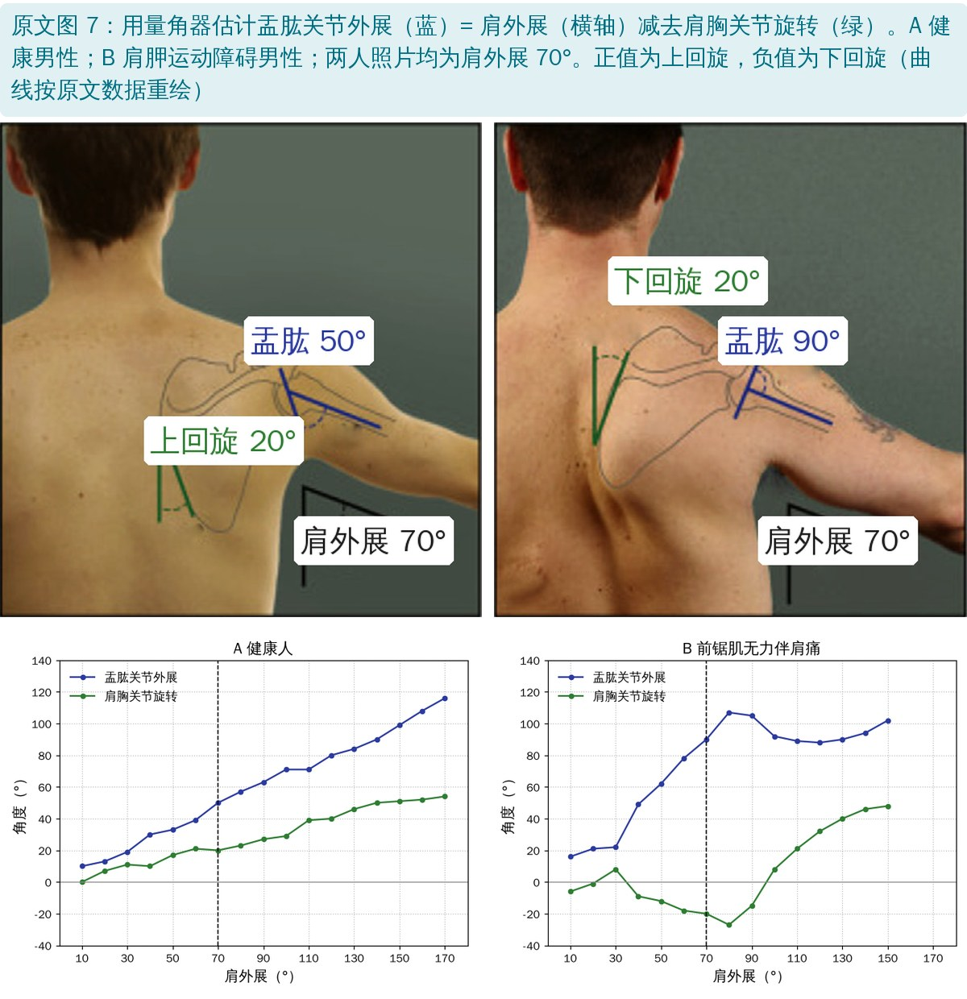
🔖原文图 7：量角器估计盂肱关节外展
方法很简单：每外展 10°，量一次肩外展角（垂线与肱骨干）和肩胛上回旋角（垂线与肩胛内侧缘），两者相减就是盂肱关节外展角。
• 健康人：外展 70° 时肩胛上回旋 20°，盂肱约 50°；170° 时肩胛 54°、盂肱 116°，接近 2:1 的肩肱节律
• 前锯肌无力伴前侧肩痛：前半程肩胛反而下回旋，70° 时下回旋 20°，盂肱外展达 90°，比整个肩的外展角还大；之后肩胛才开始上回旋，最多只能外展到 150°
• 这种代偿会增加盂肱关节应力、改变肩袖拉力线和肩胛周围肌的长度-张力关系
| 肩外展（°） | 健康人 肩胛旋转 | 健康人 盂肱外展 | 无力者 肩胛旋转 | 无力者 盂肱外展 |
|---|---|---|---|---|
| 10 | 0 | 10 | -6 | 16 |
| 20 | 7 | 13 | -1 | 21 |
| 30 | 11 | 19 | 8 | 22 |
| 40 | 10 | 30 | -9 | 49 |
| 50 | 17 | 33 | -12 | 62 |
| 60 | 21 | 39 | -18 | 78 |
| 70 | 20 | 50 | -20 | 90 |
| 80 | 23 | 57 | -27 | 107 |
| 90 | 27 | 63 | -15 | 105 |
| 100 | 29 | 71 | 8 | 92 |
| 110 | 39 | 71 | 21 | 89 |
| 120 | 40 | 80 | 32 | 88 |
| 130 | 46 | 84 | 40 | 90 |
| 140 | 50 | 90 | 46 | 94 |
| 150 | 51 | 99 | 48 | 102 |
| 160 | 52 | 108 | — | — |
| 170 | 54 | 116 | — | — |
原文图 7 中的数据表（中文整理；单位为度，正值上回旋、负值下回旋）
理想的肩胛面外展应接近 2:1 节律，并伴随上回旋、适度外旋和后倾。训练目标是让前锯肌和中、下斜方肌多出力，同时少用上斜方肌和胸小肌。
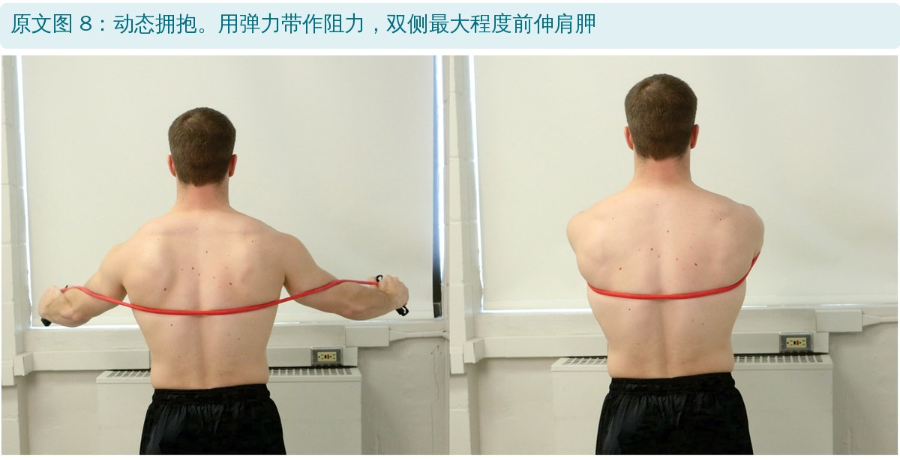
🔖原文图 8：动态拥抱
• 动态拥抱：弹力带绕背，双手像抱大树一样向前，最大程度前伸肩胛
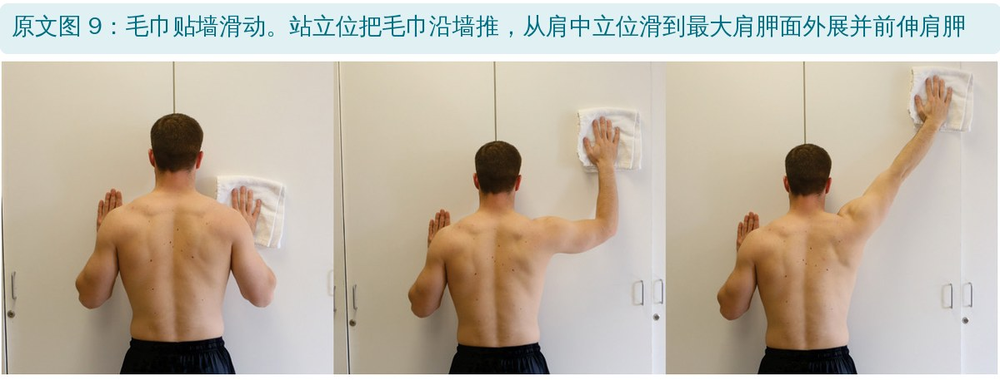
🔖原文图 9：毛巾贴墙滑动
• 毛巾贴墙滑动：站立，手压毛巾沿墙向上滑，从中立位滑到最大肩胛面外展 + 肩胛前伸
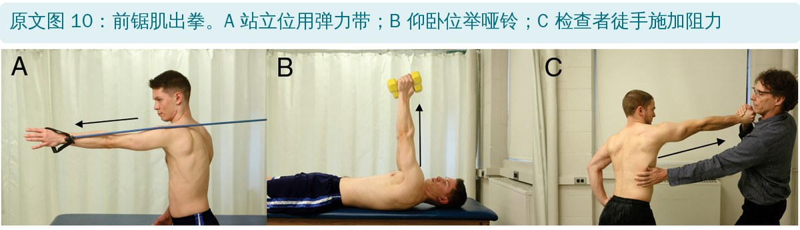
🔖原文图 10：前锯肌出拳
• 前锯肌出拳：伸肘，只用肩胛把拳头“送出去”；可站立拉弹力带、仰卧举哑铃，或由治疗师徒手抗阻
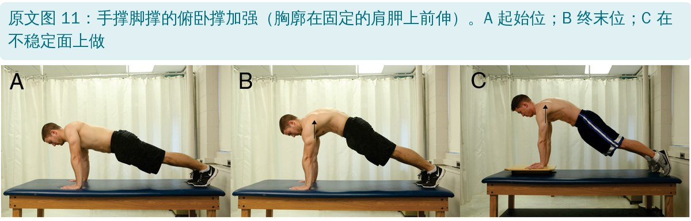
🔖原文图 11：手撑俯卧撑加强
• 俯卧撑加强（手撑）：做完俯卧撑后再把胸廓往上“顶”一下（肩胛固定、胸廓前伸），这就是前锯肌的“反向作用”；可在不稳定面上加难度
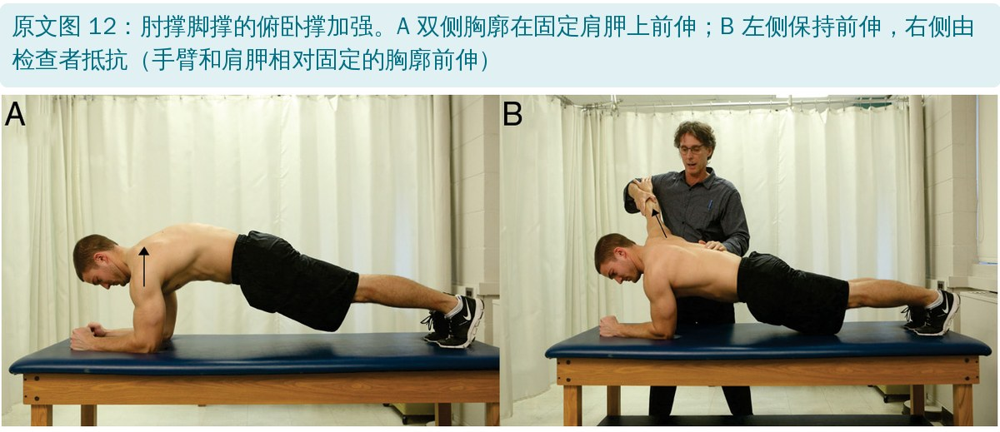
🔖原文图 12：肘撑俯卧撑加强
• 俯卧撑加强（肘撑）：平板支撑姿势下顶起胸廓；也可单侧保持前伸，治疗师对另一侧抗阻
• 叙述性综述，以教科书理论为主：力偶、力臂分析多来自作者教科书的模型，属于理论推导
• 动作的肌电证据没有给出：文中说这些动作“很多经肌电验证”，但没有列出任何具体肌电数值或比较
• 量角器方法只用两个人举例：没有信度效度数据，且二维测量无法反映肩胛的倾斜和内外旋
• 练前锯肌能否改善肩痛：文中只说“被认为与疼痛有关”，没有引用干预效果的随机对照试验
• “前半程一直下回旋”不完全准确：图 7B 数据中，外展 30° 时肩胛其实是上回旋 8°，40° 起才转为下回旋；正文说“在大于 80° 后开始上回旋”，数据显示到 90° 仍下回旋 15°，100° 时才转为正值
• 力偶成员说法不一：讲功能时说主要上回旋力偶是前锯肌和斜方肌（图 2 包括上、中、下三部分），讲病理时又只说前锯肌和上、下斜方肌
• “很多经肌电验证”缺依据：图 8～12 的动作没有逐一对应引用，读者无法知道哪个动作有证据、哪个只是经验
• 参考文献错误：文献 14（Ekstrom）年份应为 2004 而非 2014；文献 20 作者 Cagnie 拼成“Gagnie”，页码“2184-2193”有误
• 小错：rib cage 写成“rig cage”；“the scapular to paradoxically”应为 scapula；摘要中 palette 写成“pallet”
• 先看再测：观察外展时肩胛是否翘起、是否过早下回旋，再用外展测试和前伸测试判断前锯肌力量
• 一把量角器就能看节律：每 10° 量肩外展和肩胛上回旋角，算出盂肱角度，直观发现“盂肱外展比肩还多”的代偿
• 训练顺序：从动态拥抱、出拳、贴墙滑动起步，再进阶到俯卧撑加强、不稳定面和单侧抗阻
• 别忘了周围肌：中、下斜方肌要一起练，胸小肌短缩要松解，上斜方肌过度激活要控制
• 翼状肩胛要查神经：明显翼状时考虑胸长神经损伤，必要时转诊做电生理检查
欢迎关注骨科康复小黄公众号，获取更多物理治疗的专业知识！
📄参考文献：
Neumann DA, Camargo PR. Kinesiologic considerations for targeting activation of scapulothoracic muscles – part 1: serratus anterior. Braz J Phys Ther. 2019;23(6):459-466. doi:10.1016/j.bjpt.2019.01.008
原文版权：© 2019 巴西物理治疗研究与研究生协会，Elsevier 出版，保留所有权利；部分插图经许可转载自 Neumann《肌肉骨骼系统运动学》第 3 版（Elsevier 2017）。本文为学术交流用的中文解读：图 1～3、6 英文标注改为中文，图 4、5、8～12 照片直接引用，图 7 曲线按原文数据重绘。版权归原作者与期刊，如有侵权请联系删除。